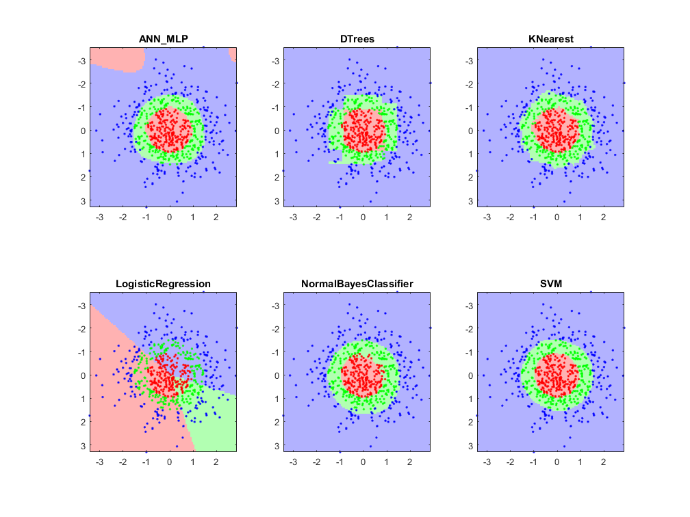

Machine Learning Demo
Example using different classifiers.
K-class classification data of 2D points (training data)
K = 3; % number of classes (pick a number between 2 and 6)
[X,Y] = cv.createConcentricSpheresTestSet(200*K, 2, K);
Y = Y(:);create grid of points to cover domain of data (testing data)
mn = min(X); mx = max(X); N = 100; [X1,X2] = meshgrid(linspace(mn(1),mx(1),N), linspace(mn(2),mx(2),N)); X1X2 = [X1(:) X2(:)];
some colors for plots
if true clrBG = [1.0 0.7 0.7; 0.7 1.0 0.7; 0.7 0.7 1.0; ... 0.7 1.0 1.0; 1.0 0.7 1.0; 1.0 1.0 0.7]; clrFG = [1 0 0; 0 1 0; 0 0 1; 0 1 1; 1 0 1; 1 1 0]; % 'rgbcmy' else clrBG = brighten(lines(6), 0.7); clrFG = lines(6); end
different machine learning models
models = {'ANN_MLP', 'DTrees', 'KNearest', ...
'LogisticRegression', 'NormalBayesClassifier', 'SVM'};
figure('Position',get(0, 'DefaultFigurePosition').*[0.5 0.5 1.8 1.8])
for i=1:numel(models)
% create ML model
switch models{i}
case 'ANN_MLP'
obj = cv.ANN_MLP();
obj.LayerSizes = [2 4 4 K];
obj.setActivationFunction('Sigmoid', 'Param1',1.0, 'Param2',1.0);
obj.TermCriteria.maxCount = 2000;
obj.TermCriteria.epsilon = 1e-4;
case 'DTrees'
obj = cv.DTrees();
case 'KNearest'
obj = cv.KNearest();
case 'LogisticRegression'
obj = cv.LogisticRegression();
case 'NormalBayesClassifier'
obj = cv.NormalBayesClassifier();
case 'SVM'
obj = cv.SVM();
end
% train
if strcmp(models{i}, 'ANN_MLP')
% ANN_MLP doesn't handle categorical data, we use 1-of-N encoding
YY = bsxfun(@eq, Y, 0:(K-1)); % [Y==0 Y==1 .. Y==(K-1)]
else
YY = int32(Y);
end
tic
obj.train(X, YY);
toc
% predict
YYhat = obj.predict(X1X2);
if strcmp(models{i}, 'ANN_MLP')
[~,Yhat] = max(YYhat, [], 2);
else
Yhat = int32(YYhat);
end
% plot predictions and actual classes
subplot(2,3,i)
imagesc(X1(1,:), X2(:,1), reshape(double(Yhat)+1, size(X1)))
hold on
if mexopencv.isOctave()
%HACK: GSCATTER not implemented in Octave
scatter(X(:,1), X(:,2), 6, clrFG(double(Y)+1,:), 'filled')
else
gscatter(X(:,1), X(:,2), Y, clrFG, '.', 6, 'off')
end
hold off
colormap(clrBG(1:K,:))
axis equal, axis([mn(1) mx(1) mn(2) mx(2)])
title(models{i}, 'Interpreter','none')
endElapsed time is 0.053490 seconds. Elapsed time is 0.002736 seconds. Elapsed time is 0.001419 seconds. Elapsed time is 1.274223 seconds. Elapsed time is 0.003751 seconds. Elapsed time is 0.007012 seconds.